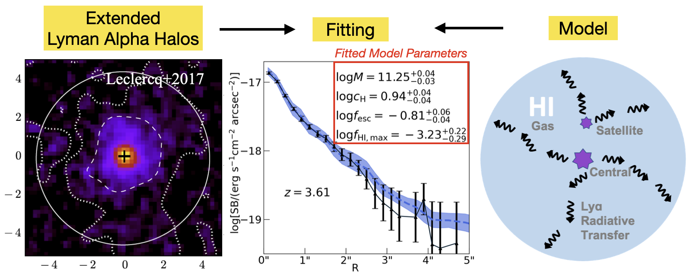
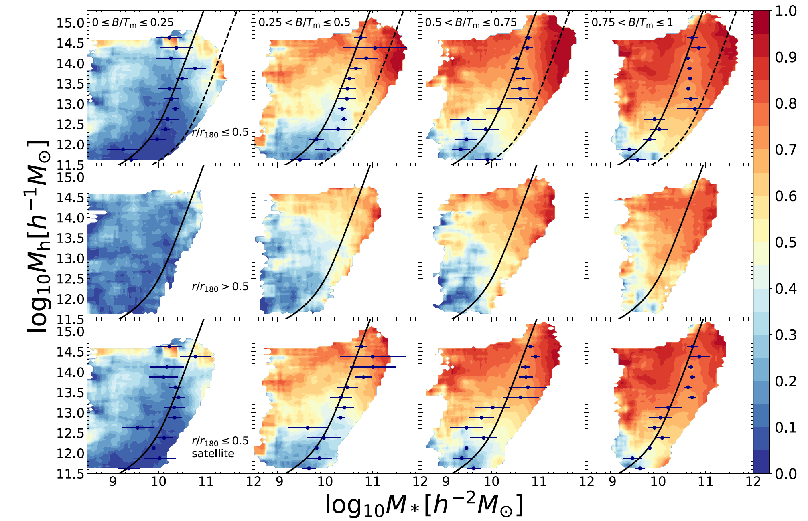

This is Pengfei Li's homepage. Hello World!
This is Pengfei Li's homepage. Hello World!
I am a graduate student in Astronomy at the University of Utah. I am interested in
broad topics related to galaxy formation, large scale structure,
and cosmology. I am currently working on modeling Lyman Alpha Radiative Transfer
to learn about neutral hydrogen distribution and properties in our universe.
Here is my publication list in ADS.
Here is my CV.
Research
Understanding the Circum-galactic Medium by Emulating
Extended Lyman Alpha Halos

The diffused Lyα emission around galaxies, or the extended Lyα halos, have been
characterized by observations. Due to the resonant scattering between Lyα photons and
neutral hydrogen atoms, the extended Lyα halos provide a unique way to study gas
distribution and properties of CGM. We build up a physical model for the surface brightness
profiles of such systems. Equipped with a Gaussian Process emulator, our model can fit observed
profiles by a Monte Carlo search in the model parameter space and get key parameters like halo
mass, gas concentration, ionization state, etc. With this model, we hope to extract physical
information from the observed profiles and learn more about the nature of extended Lyα
halos and their connection to the central galaxies. Check our poster for the CGM conference Oases in the Cosmic Desert
for more details.
Characterisic Mass in Galaxy Quenching: Environmental
versus Internal Effects

Galaxy survey in our local universe reveals a distinctive bimodal distribution of galaxies:
one has active star formation while the other's star formation almost completely shuts down.
How galaxy stops forming stars, or galaxy quenching, is a key problem in galaxy evolution.
Current understanding broadly catergorizes the quenching mechanisms into internal and
environmental effects. Based on observation, we discuss a boundary in stellar mass versus
halo mass space, which can well separate the two effects. We call it the characteristic stellar
mass, defined as one-fifth central galaxy stellar mass. Environmental effects dominate below this
mass while internal effects dominate above this mass. This is an interesting phenomenon in
galaxy quenching and can provide important constrains on galaxy formation models.
ApJ, 902, 75 (2020)
arxiv:2003:09776